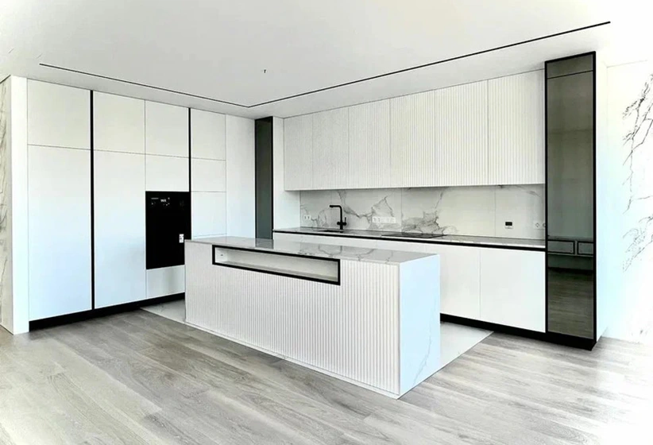

КУХНИ ПО ИНДИВИДУАЛЬНЫМ РАЗМЕРАМКухня.
Кухня.
С вашим характером.
Кухни по индивидуальным размерам. Подберём планировку, материалы и наполнение под ваш дом.
Обсудить мой проект
КУХНЯ СК-80Сначала удобство.
Сначала удобство.
Затем детали.
Расположить технику, организовать хранение и сохранить свободную рабочую поверхность. Обсудим вашу планировку и предложим подходящее исполнение.
Рассчитать мой проект